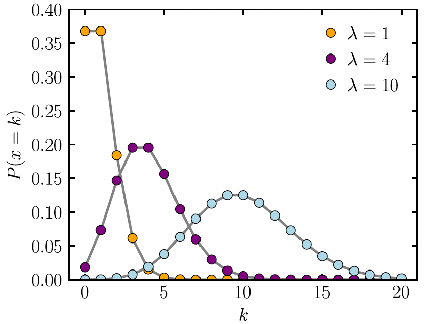

2025-06-04
Understand what we can measure with Poisson regression and how to interpret coefficients.
Understand how to adjust for different follow-up times among individuals
\[ \log(\mu) = \log(\lambda) = \beta_0 + \beta_1 X\]
Count data modeled as Poisson distribution
Rate data modeled as Poisson distribution
Example of count data:
Each female horseshoe crab in the study had a male crab attached to her in her nest. The study investigated factors that affect whether the female crab had any other males, called satellites, residing near her. Explanatory variables that are thought to affect this included the female crab’s color, spine condition, and carapace width, and weight. The response outcome for each female crab is the number of satellites. There are 173 females in this study.

Example of rate data:
We can look at the lung cancer incident counts (cases) per age group for four Danish cities from 1968 to 1971. Since it’s reasonable to assume that the expected count of lung cancer incidents is proportional to the population size, we would prefer to model the rate of incidents per capita.
\[\ln(\mu(X)) = \ln(\lambda(X)) = \beta_0 + \beta_1 X\]
In simple Poisson regression: \[\ln(\mu(X)) = \ln(\lambda(X)) = \beta_0 + \beta_1 X\]
When \(X\) is a binary variable: How do we interpret \(\beta_1\)?
By subtraction, we have \[\beta_1 = \beta_0 + \beta_1 - (\beta_0) = \ln(\mu(X = 1)) - \ln(\mu(X = 0)) = \ln \left( \dfrac{\mu(X = 1)}{\mu(X = 0)} \right)\]
\(\beta_1\): log-count ratio or log-rate ratio
So \(\exp(\beta_1)\) is the count or rate ratio comparing \(X=1\) to \(X=0\)
When \(X\) is a continuous variable: How do we interpret \(\beta_0\)?
\(\beta_0\): log-count or log-rate when \(X\) is 0
So \(\exp(\beta_0)\) is the expected count or rate when \(X\) is 0
When \(X\) is a continuous variable: How do we interpret \(\beta_1\)?
crab_mod = glm(num.satellites ~ width,
family=poisson,
data=hcrabs)
tidy(crab_mod, conf.int=T,
exponentiate=T) %>%
gt() %>%
tab_options(table.font.size = 35) %>%
fmt_number(decimals = 2)| term | estimate | std.error | statistic | p.value | conf.low | conf.high |
|---|---|---|---|---|---|---|
| (Intercept) | 0.04 | 0.54 | −6.09 | 0.00 | 0.01 | 0.11 |
| width | 1.18 | 0.02 | 8.22 | 0.00 | 1.13 | 1.23 |
Interpretation: For every 1-cm increase in carapace width, the expected number of satellites increases by 18% (95% CI: 13%, 23%).
| term | estimate | std.error | statistic | p.value | conf.low | conf.high |
|---|---|---|---|---|---|---|
| (Intercept) | 0.004 | 0.200 | −28.125 | 0.000 | 0.002 | 0.005 |
| cityHorsens | 0.719 | 0.182 | −1.818 | 0.069 | 0.503 | 1.026 |
| cityKolding | 0.690 | 0.188 | −1.978 | 0.048 | 0.476 | 0.995 |
| cityVejle | 0.762 | 0.188 | −1.450 | 0.147 | 0.525 | 1.099 |
| age55-59 | 3.007 | 0.248 | 4.434 | 0.000 | 1.843 | 4.901 |
| age60-64 | 4.566 | 0.232 | 6.556 | 0.000 | 2.907 | 7.236 |
| age65-69 | 5.857 | 0.229 | 7.704 | 0.000 | 3.748 | 9.249 |
| age70-74 | 6.404 | 0.235 | 7.891 | 0.000 | 4.043 | 10.212 |
| age75+ | 4.136 | 0.250 | 5.672 | 0.000 | 2.523 | 6.762 |
\[\text{person-years} = 2 \text{ people} \cdot 2 \text{ years} +2 \text{ people} \cdot 3 \text{ years}+ 1 \text{ person} \cdot 3.8 \text{ years} = 13.8 \text{ person-years}\]
\[\begin{aligned} \text{Rate of event} &= \dfrac{\# events}{\text{person-years}}= \dfrac{1 \text{ event}}{13.8 \text{person-years}} \\ &= 0.072 \text{ events per person−year} \\ &=72 \text{ events per } 1000 \text{ person−years} \end{aligned}\]
Now our rate of event is measured per person-year
What if we have data that each observation has different period of time?
Note we have: \(\mu = \lambda t\) and with predictor \(X\), \(\mu(X) = \lambda(X) \cdot t(X)\)
Then we construct:
\[\begin{aligned} \ln(\lambda(X)) = & \beta_0 + \beta_1 X \\ \ln(\lambda(X)) = \ln\left(\dfrac{\mu(X)}{t(X)}\right) = \ln(\mu(X)) - \ln(t(X)) = &\beta_0 + \beta_1 X \\ \ln(\mu(X)) = & \ln(t(X)) + \beta_0 + \beta_1 X\\ \end{aligned}\]
\[\ln(\mu(X)) = \ln(t(X)) + \beta_0 + \beta_1 X\]
We have one more term in the model and this term is called offset, a known term in the model since \(t(X)\) is known for each individual
\(\ln(t(X))\) is called the offset
Offsets can also be something like the population size in a city…
Call:
glm(formula = cases ~ city + age, family = poisson, data = lc_inc,
offset = lpop)
Coefficients:
Estimate Std. Error z value Pr(>|z|)
(Intercept) -5.6321 0.2003 -28.125 < 2e-16 ***
cityHorsens -0.3301 0.1815 -1.818 0.0690 .
cityKolding -0.3715 0.1878 -1.978 0.0479 *
cityVejle -0.2723 0.1879 -1.450 0.1472
age55-59 1.1010 0.2483 4.434 9.23e-06 ***
age60-64 1.5186 0.2316 6.556 5.53e-11 ***
age65-69 1.7677 0.2294 7.704 1.31e-14 ***
age70-74 1.8569 0.2353 7.891 3.00e-15 ***
age75+ 1.4197 0.2503 5.672 1.41e-08 ***
---
Signif. codes: 0 '***' 0.001 '**' 0.01 '*' 0.05 '.' 0.1 ' ' 1
(Dispersion parameter for poisson family taken to be 1)
Null deviance: 129.908 on 23 degrees of freedom
Residual deviance: 23.447 on 15 degrees of freedom
AIC: 137.84
Number of Fisher Scoring iterations: 5When people are followed for different amounts of time, we should include an offset
We can use Wald test and LRT in the same way as logistic regression to test our coefficients and variables
Lesson 18: Poisson Regression